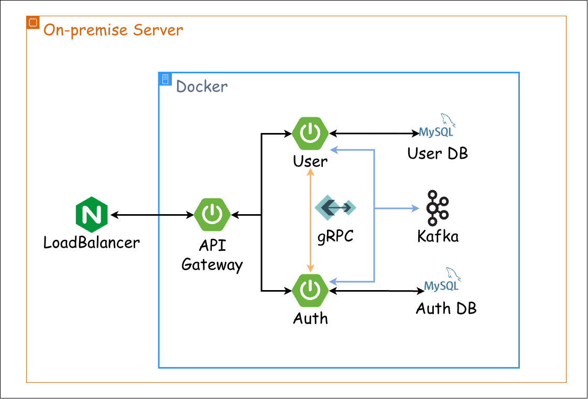
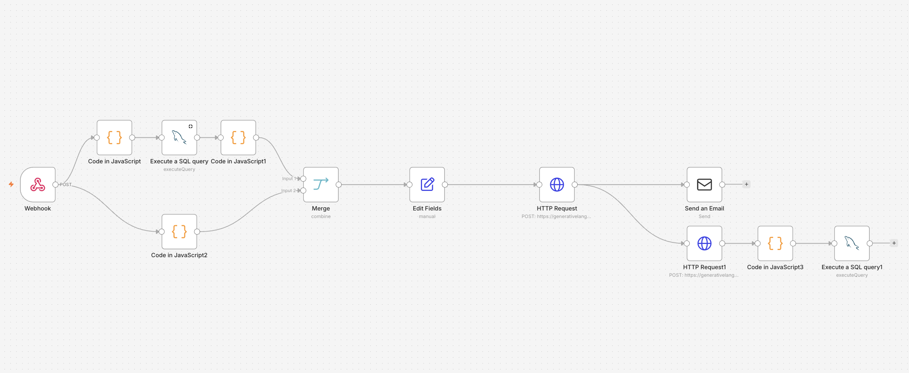

연결을 이해하고, 신뢰를 만드는 백엔드 개발자
군 통신장교로서 네트워크와 서버를 운영했고,
백엔드로서 서비스와 데이터의 연결을 다뤄
왔습니다.
그 연결이 끊기지 않도록
원인을 찾고 문제를 해결하여,
사용자가 믿고 쓸 수 있는 시스템을 만들기 위해
노력합니다.
Profile 프로필
- 군에서 5년간 근무하다가 개발이 좋아 전역했습니다.
- 소통과 문서화를 중요하게 생각합니다.
- 객체지향과 TDD, 클린 아키텍처에 관심이 많습니다.
Skills 기술 스택
- Languages
- Java, Javascript, C, C++, C#, Shell Script, Groovy
- Frameworks
- Spring, SpringBoot, JPA, MyBatis, Flyway, React.js, Vue.js, WPF
- Network
- TCP/UDP, HTTP(S), GRPC, Kafka, NGinX, Spring Cloud Gateway
- Database · Cache
- MySQL, Oracle, MongoDB, Redis
- OS · Infra
- Linux, RTOS, Docker, AWS (SAA)
- CI/CD · 협업
- Jenkins, Git, Jira, Notion
서비스 간 데이터 정합성 확보
Overview 개요
인증 기능과 사용자 기능을 분리하는 과정에서 발생한 회원가입 실패 및 데이터 불일치 문제를 해결했습니다. 서비스 간 요청이 부분적으로 실패하더라도 데이터 정합성을 유지하고, 재시도와 복구가 가능한 구조를 만드는 것이 목표였습니다.

Problem 문제
Situation 상황
기존에는 인증과 사용자 기능이 하나의 서비스에서 처리됐지만, 기능을 분리한 이후 회원가입 과정에서 문제가 발생했습니다.
Problem Scenario 문제 시나리오
- 사용자가 회원가입을 요청합니다.
- 유저 서비스에서 인증 생성 요청을 전송합니다.
- 인증 서비스에서 인증 정보를 저장합니다.
- 이메일 중복 등으로 유저 서비스에서 계정 정보 저장에 실패합니다.
- 재시도하면 인증 생성 요청이 남아 있던 인증 데이터와 충돌해 가입 실패를 안내합니다.
인증 정보가 먼저 저장된 뒤 계정 정보 저장이 실패하면서, 하나의 회원가입 요청이 부분적으로만 완료될 수 있었습니다.
Reason 원인분석
- 재시도에 대한 안전성 부족: 동일한 요청이 반복됐을 때 중복 데이터나 충돌이 발생할 수 있었습니다.
- 부분 실패에 대한 처리 부족: 한 서비스의 실패가 다른 서비스에 이미 반영된 데이터를 자동으로 되돌리지 못했습니다.
- 데이터 복구 절차 부족: 요청 처리 도중 발생한 불일치를 찾아 복구하여, 결과적 정합성을 달성하는 절차가 필요했습니다.
Solve 해결
Idea 아이디어
회원가입 과정에서 각 서비스의 처리 결과를 구분하고, 중간 단계에서 실패하더라도 데이터가 불일치한 상태로 방치되지 않도록 처리 흐름을 개선했습니다.
Implementation 핵심구현
① 멱등성 확보
- 요청마다 멱등 키를 발급해 중복 여부를 판별합니다.
- JPA 엔티티에 unique 제약조건을 걸어 중복 저장을 차단합니다.
- 동일 키 재전송에도 최초 1건만 저장됩니다.
② 실패 시 보상 처리
- Saga 패턴으로 서비스 작업을 이벤트로 연결해 Kafka로 전달합니다.
- 후속 단계 실패 시 보상 트랜잭션을 발행해 이전 커밋을 되돌립니다.
- 보상 실패에 대비한 별도 복구 절차를 마련합니다.
③ 데이터 정합성 점검 및 복구
- Spring Batch로 인증·사용자 양쪽을 주기적으로 대조합니다.
- 양쪽에 모두 등록되지 않은 사용자를 식별합니다.
- 미등록 사용자를 삭제해 정합성을 회복합니다.
Result 결과
Verification 검증
| 테스트 시나리오 | 주요 확인사항 |
|---|---|
| 정상 회원가입 | 인증 정보와 사용자 데이터가 모두 정상적으로 생성되는가 |
| 동일 요청 재전송 | 중복 데이터가 생성되지 않는가 |
| 인증 생성 실패 | 사용자 데이터만 남는 불일치가 처리되는가 |
| 불일치 데이터 처리 | 복구가 필요한 상태를 식별 후 복구 절차를 통해 정상 상태로 돌아가는가 |
Effect 개선효과
- 중복 요청 대응: 재시도로 인해 발생할 수 있는 중복 처리 문제를 방지합니다.
- 실패 복구 가능성: 중간 단계 실패 시 데이터 상태를 복구할 수 있는 절차를 마련했습니다.
- 운영 안정성: 요청 처리 중 해결되지 않은 데이터 불일치를 확인하고 복구할 수 있도록 개선했습니다.
Review 회고
Keep 계속할점
- 정상 흐름과 실패·재시도·복구를 함께 설계하며 안정적인 서비스 로직을 구현할 수 있었습니다.
- 서비스가 분리되는 상황에서 트랜잭션 경계를 넘어 데이터 상태와 정합성을 관리하는 방법을 배웠습니다.
Problem 아쉬운점
- 장애 상황별 테스트와 커버리지가 부족했습니다.
- 데이터가 불일치되거나 복구 이력을 관측하는 로그 등이 부족했습니다.
- DB 저장과 이벤트 발행의 원자성이 보장되지 않았습니다 (Dual Write 한계).
Try 시도할점
- 장애 상황별로 대응 가능한 테스트를 작성하겠습니다.
- 복구 이력을 추적할 수 있는 구조를 고민하겠습니다.
- Transactional Outbox 패턴을 학습해서 적용해보고 싶습니다.
운영 자동화 및 장애대응
n8n·LLM·MCP 기반 장애 자동대응
Overview 개요
배포 오류나 장애가 나면 사용자가 직접 로그를 확인하고 원인을 분석해야 했습니다. n8n과 LLM API, incident-MCP·server-MCP를 엮어 AI가 메트릭을 수집하고 과거 원인에서 답을 찾아 해결하도록 했습니다. 해결된 결과는 다시 incident DB에 쌓여 다음 해결을 더 낫게 만드는 선순환 구조가 목표였습니다.
Problem 문제
Problem 문제상황
배포 오류나 장애가 발생하면 사용자가 직접 서버에 접속해 로그를 뒤지고 원인을 분석해야 했습니다. 로그 양이 많고 원인이 흩어져 있어 특정이 느렸고, 같은 장애가 반복돼도 매번 처음부터 살펴봐야 했습니다.
Reason 원인분석
- 직접 확인: 장애가 나면 서버에 접속해 로그를 직접 뒤져야 했습니다.
- 원인 분산: 로그가 많고 원인이 흩어져 특정이 느렸습니다.
- 반복 대응: 같은 장애도 매번 처음부터 분석해야 했습니다.
Solve 해결
Idea 아이디어
n8n이 감지하고, MCP가 수집하고, LLM이 분석·해결하고, 결과가 DB에 쌓이는 선순환으로 연결했습니다. 사람은 최종 판단만 하고, 수집·분석·기록은 AI에게 맡기는 것이 목표였습니다.
Operation Scenario 대응 시나리오
- n8n이 배포 오류·장애 발생을 감지합니다.
- server-mcp로 메트릭과 로그를 수집합니다.
- LLM API가 incident-mcp 과거 원인과 대조해 원인을 분석합니다.
- 분석 결과로 문제를 해결합니다.
- 해결 결과를 incident DB에 기록해 히스토리를 쌓습니다.
수집→분석→해결→기록이 자동으로 돌고, 기록이 쌓일수록 해결이 나아지는 선순환 구조입니다.
Implementation 핵심구현
① n8n 감지·트리거
- n8n 워크플로우가 배포 오류·장애 발생을 감지합니다.
- 감지 즉시 대응 파이프라인을 실행합니다.
- 사람 개입 없이 수집 단계로 넘깁니다.
② LLM 분석
- server-mcp로 메트릭과 로그를 수집합니다.
- LLM API가 incident-mcp 과거 원인과 대조해 분석합니다.
- 분석 결과로 해결 방안을 도출합니다.
③ incident DB 기록·선순환
- 해결 결과를 incident DB에 기록합니다.
- 쌓인 히스토리가 다음 분석의 근거가 됩니다.
- 반복될수록 해결 과정이 개선됩니다.

Result 결과
Verification 검증
| 확인 항목 | 주요 확인사항 |
|---|---|
| 감지 | n8n이 배포 오류·장애 발생을 감지하는가 |
| 수집·분석 | server-mcp 수집과 LLM 분석으로 원인을 특정할 수 있는가 |
| 과거 대조 | incident-mcp 과거 원인에서 답을 찾을 수 있는가 |
| 기록·선순환 | 해결 결과가 incident DB에 쌓여 재활용되는가 |
Result 결과
Effect 개선효과
- 수동 확인 탈피: 직접 로그를 뒤지던 대응을 AI 수집·분석으로 바꿨습니다.
- 과거 활용: incident DB의 원인을 재사용해 반복 장애에 대응합니다.
- 선순환: 해결 기록이 쌓여 다음 해결이 나아지는 구조를 만들었습니다.
Review 회고
Keep 계속할점
- 수집→분석→해결→기록 선순환 구조를 만들었습니다.
- 사람은 최종 판단에 집중했습니다.
Problem 아쉬운점
- 쌓인 히스토리 초기에는 분석 근거가 부족했습니다.
- 복구 실행의 자동화는 다음 단계입니다.
Try 시도할점
- 쌓이는 기록으로 분석 기준을 개선하겠습니다.
- 승인 후 자동 복구까지 확대하겠습니다.
대규모 데이터 처리 성능 개선
병목 분석과 비동기 처리
Overview 개요
인증 기능과 사용자 기능을 분리하는 과정에서 발생한 회원가입 실패 및 데이터 불일치 문제를 해결했습니다. 서비스 간 요청이 부분적으로 실패하더라도 데이터 정합성을 유지하고, 재시도와 복구가 가능한 구조를 만드는 것이 목표였습니다.
Problem 문제
Problem 문제상황
기존에는 인증과 사용자 기능이 하나의 서비스에서 처리됐지만, 기능을 분리한 이후 회원가입 과정에서 문제가 발생했습니다.